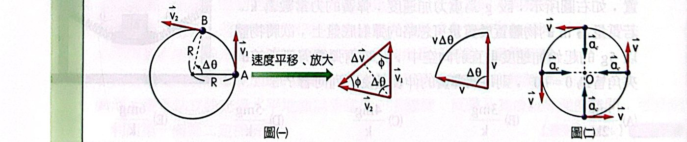
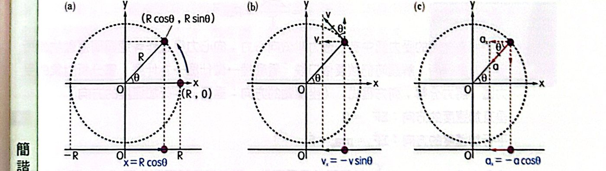
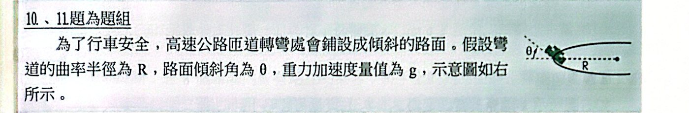
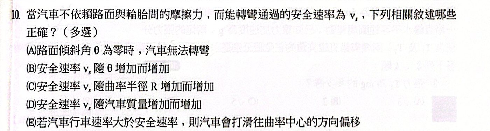
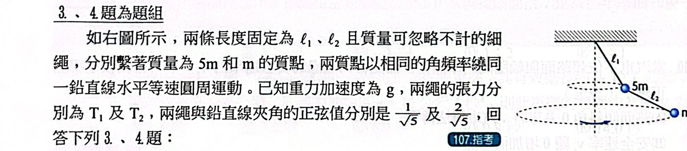
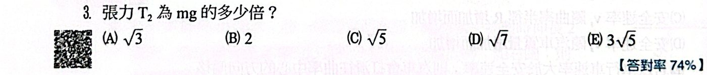
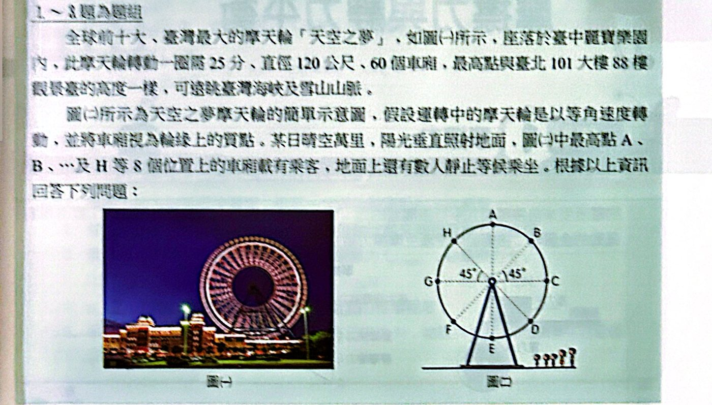
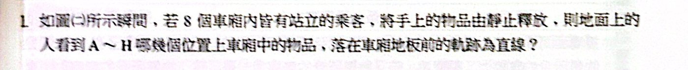

重點整理
這個焦點要回答一個問題：東西為什麼會轉圈？ 答案是：有一個一直指向圓心的合力，不斷把物體的運動方向「掰彎」。先學怎麼描述轉圈（角速度、週期），再算轉圈需要多大的加速度和力，最後把圓周運動「投影」到一條直線上，就得到另一種重要的運動——簡諧運動。
一、角速度
描述直線運動時，我們問「每秒走幾公尺」；描述轉圈時，更自然的問法是「每秒轉了多少角度」。物體轉過的角度變化稱為角位移 Δθ，單位時間內的角位移就是角速度 ω（又稱角頻率）。角度一律用弧度，這樣弧長 ＝ 半徑 × 角度，後面所有公式才會簡潔。
ω ＝ Δθ / Δt （rad/s）定義為什麼？
它在問什麼
「每秒轉幾度？」——跟速度 v ＝ Δx/Δt 問「每秒走幾公尺」是同一種想法，只是把「走的距離」換成「轉的角度」。
為什麼角度要用弧度（rad）
弧度的定義就是「弧長 ÷ 半徑」：θ ＝ s/R。
所以只要用弧度，弧長 s ＝ Rθ 會乾淨地成立，後面的 v ＝ Rω、a ＝ Rω² 才不會多出奇怪的 π/180。
一圈 ＝ 周長/半徑 ＝ 2πR/R ＝ 2π rad（＝ 360°）。
邏輯重點
同一個轉盤上，內圈外圈的 ω 都一樣（一起轉一圈），但速率 v 不一樣——這是 ω 好用的原因。
二、等速圓周運動
1. 週期 T、頻率 f、角速度 ω、半徑 R、速率 v 的關係
「等速」圓周運動指的是速率固定、轉得一樣快。這時候轉一圈花的時間固定，叫週期 T；每秒轉幾圈叫頻率 f，兩者互為倒數。有了週期，角速度和速率都能用「轉一圈」來算：
ω ＝ 2π/T ＝ 2πf轉一圈的觀點為什麼？
推導
等速圓周運動 ω 固定，就挑「剛好轉一圈」這段時間來算：
- 轉一圈的角度 Δθ ＝ 2π
- 花的時間 Δt ＝ 週期 T
⇒ ω ＝ 2π/T
頻率 f 是「每秒轉幾圈」，所以 f ＝ 1/T，代進去就是 ω ＝ 2πf。
直覺
ω 是「每秒轉幾個弧度」，f 是「每秒轉幾圈」。一圈 ＝ 2π 弧度，所以兩者差一個 2π 倍。
知道每秒轉多少角度之後，就能算物體實際跑多快：半徑愈大，轉同樣角度走的弧長愈長。
v ＝ 2πR/T ＝ Rω繞一圈走的路為什麼？
推導一：走一圈
轉一圈走的路是圓周長 2πR，花的時間是 T ⇒ 速率 v ＝ 2πR/T。
推導二：弧長公式
弧長 s ＝ Rθ，兩邊除以時間：s/t ＝ R·(θ/t) ⇒ v ＝ Rω。
邏輯重點
- 同一個轉盤（ω 相同），離圓心愈遠跑得愈快，v ∝ R。旋轉木馬外圈的馬比內圈的快。
- 等速圓周運動的「速率」固定，但「速度」方向一直變，所以它不是等速度運動。
2. 向心加速度
這裡是整個單元最關鍵的觀念：等速圓周運動的速率不變，但運動方向（沿切線）一直在改變。速度是向量，方向改變也算「速度改變」，所以轉圈的物體一定有加速度。
這個加速度要多大、指向哪裡？看下面的圖：把前後兩個速度箭頭接在一起，速度的變化量 Δv 永遠指向圓心，所以稱為向心加速度。它的大小跟「跑多快」和「彎多急」有關——跑得愈快、半徑愈小，加速度愈大。

圖（一）速度變化量指向圓心；圖（二）向心加速度處處指向圓心
ac ＝ v²/R ＝ Rω² ＝ 4π²R/T² ＝ vω核心公式為什麼？
為什麼等速率也有加速度？
加速度 ＝ 速度的變化 ÷ 時間。速度是向量，大小不變、方向變，也叫「變」。
推導（看圖一）
- 物體從 A 走到 B，轉了 Δθ。v1、v2 大小都是 v，夾角也是 Δθ（速度永遠垂直半徑，半徑轉多少、速度就轉多少）。
- 把 v1、v2 尾巴接在一起，Δv 就是兩箭頭尖端的連線。這是一個腰長 v、頂角 Δθ 的等腰三角形。
- Δθ 很小時，底邊 ≈ 弧長：|Δv| ≈ v·Δθ
- 除以 Δt：a ＝ v·(Δθ/Δt) ＝ vω
再用 ω ＝ v/R 換掉：a ＝ v²/R；用 v ＝ Rω 換：a ＝ Rω²；用 ω ＝ 2π/T 換：a ＝ 4π²R/T²。四個長相其實是同一個式子。
方向為什麼指向圓心
Δθ → 0 時，等腰三角形的兩個底角都 → 90°，Δv 和 v 垂直，而垂直速度的方向就是沿半徑指向圓心。
直覺：為什麼是 v 的平方？
v 出現兩次，因為跑得快有兩個效果：
1. 要被轉向的速度本身比較大（Δv ∝ v）
2. 轉向得也比較頻繁（每秒轉的角度 ω ＝ v/R 也 ∝ v）
所以速率變 2 倍，向心加速度變 4 倍——這就是高速過彎特別危險的原因。
而 R 在分母：彎道愈急（R 小），方向變得愈兇，加速度愈大。
選哪個形式？
題目給 v 用 v²/R；給週期用 4π²R/T²；同轉盤比較（ω 相同）用 Rω²。
三、向心力
有加速度就一定有合力（牛頓第二定律）。既然向心加速度指向圓心，物體受的合力也指向圓心，這個合力就叫向心力。要特別注意：向心力不是某一種新的力，而是繩張力、摩擦力、重力、正向力……這些真實的力「合起來」的結果。解題時就是讓「實際的合力」等於「轉這個圈需要的力」。
Fc ＝ mac ＝ mv²/R ＝ mRω² ＝ m·4π²R/T²牛頓第二定律為什麼？
推導
就是 ΣF ＝ ma，把 a 換成向心加速度而已：合力 ＝ m × ac，方向指向圓心。
邏輯：「因」與「果」
- 左邊 |ΣF|：物體實際受到的力的合力（重力、張力、正向力、摩擦力…）——原因
- 右邊 mv²/R：要維持這個圓周運動需要多少力——結果
解題就是讓「實際有的」＝「需要的」。
常見錯誤
「向心力」不是一種新的力，受力圖上不能畫一個叫向心力的箭頭。它只是「指向圓心的合力」的名字。
- 繩子甩球：向心力 ＝ 繩張力
- 衛星繞地球：向心力 ＝ 萬有引力
- 汽車平路轉彎：向心力 ＝ 靜摩擦力
如果力不夠會怎樣？
實際合力 ＜ mv²/R ⇒ 拉不住，物體往外偏（甩出去）；這就是「離心」現象，並沒有真的「離心力」。
四、兩個常考的圓周運動模型
把「畫出真正的力 → 分成鉛直、水平（指向圓心）兩個方向」的方法套到實際情境，最常考的是下面兩個。它們的共同點是：鉛直方向力平衡，水平方向提供向心力，所以兩式相除後質量會消掉，答案都跟 g、半徑和角度有關。
錐動擺：小球用繩子吊著在水平面上轉圈，繩子掃過的軌跡是一個圓錐。繩張力的鉛直分量撐住重力、水平分量提供向心力。
錐動擺：tanθ ＝ v²/(gr)，T ＝ 2π√(ℓcosθ/g)範例 7 的模型為什麼？
受力
只有兩個力：重力 mg（向下）、繩張力 T（沿繩，與鉛直夾 θ）。圓心在球的正內側（水平），半徑 r ＝ ℓ sinθ。
推導
- 鉛直沒有加速度：T cosθ ＝ mg
- 水平指向圓心：T sinθ ＝ m v²/r
兩式相除，T 和 m 都消掉：tanθ ＝ v²/(gr) ⇒ a ＝ g tanθ
再用 a ＝ r·4π²/T²、r ＝ ℓ sinθ：g tanθ ＝ ℓ sinθ·4π²/T² ⇒ T ＝ 2π√(ℓcosθ/g)
邏輯重點
- ℓ cosθ ＝ 懸點到圓周平面的高度 h，所以 T ＝ 2π√(h/g)，只跟高度有關！
- 轉得愈快（T 愈小），h 要愈小 ⇒ θ 愈大，繩子愈「甩平」。
- 和質量無關：重的球需要的向心力多，但重力、張力也跟著多，剛好抵消。
傾斜彎道：把路面做成斜的，正向力就有一部分朝向彎道內側，可以提供向心力，汽車不靠摩擦力也能轉彎。數學跟錐動擺一模一樣，只是把張力換成正向力。
傾斜彎道安全速率：v ＝ √(gR tanθ)範例 8 的模型為什麼？
受力
不靠摩擦力時只有重力 mg、正向力 N（垂直路面，與鉛直夾 θ）。
推導
- 鉛直：N cosθ ＝ mg
- 水平指向彎道圓心：N sinθ ＝ m v²/R
相除：tanθ ＝ v²/(gR) ⇒ v ＝ √(gR tanθ)
邏輯重點
- 路面傾斜，正向力就「歪」向彎道內側，它的水平分量幫忙提供向心力——這就是賽道、匝道要做成斜的原因。
- 和錐動擺是同一個數學（張力換成正向力），所以結果長得一樣：a ＝ g tanθ。
- 與車子質量無關；θ 愈大、R 愈大，安全速率愈高。
- 開太快（v ＞ vs）需要摩擦力沿斜面向下幫忙；開太慢則摩擦力沿斜面向上。
五、簡諧運動（SHM）
接下來看另一種常見的週期運動：彈簧上的物體、盪鞦韆、擺鐘，都是在一條線上來回往返。
1. 定義：以軌跡中點（平衡點）為原點，物體所受淨力與位置量值成正比、方向相反——離平衡點愈遠，被拉回來的力愈大，而且永遠往平衡點拉。物體在端點時離平衡點最遠，端點到平衡點的距離稱為振幅 R。在平衡點受力為零但跑最快；在端點瞬間停住但受力最大。
水平彈簧：端點受力最大，平衡點受力為零
ΣF ＝ −kx ⇔ a ＝ −(k/m)x定義式為什麼？
它在說什麼
- 量值成正比：離平衡點愈遠，被拉回來的力愈大（彈簧拉愈長愈用力）。
- 負號：力永遠指向平衡點——在右邊就往左拉，在左邊就往右推，所以叫「恢復力」。
為什麼會來回擺盪
被拉回平衡點時速度最大，衝過頭；衝過頭後力又反向把它拉回……於是在兩端之間來回。
由牛頓第二定律
ma ＝ −kx ⇒ a ＝ −(k/m)x：加速度也和位置成正比、方向相反。這一句就是判斷「是不是簡諧運動」的標準。
2. 參考圓：簡諧運動的位置、速度隨時間變化看起來很複雜，但有一個漂亮的捷徑——等速圓周運動在直徑上的投影（影子）就是簡諧運動。所以只要想像旁邊有一個一起轉的「參考圓」，把圓上的位置、速度、加速度投影到水平方向，就得到簡諧運動的所有量。

參考圓的水平投影：位置、速度、加速度
把圓上的球投影到水平軸，就能寫出影子的位置、速度、加速度。比較後會發現影子的加速度正好是 −ω² 乘以位置，符合簡諧運動的定義：
x ＝ R cos(ωt)，vx ＝ −Rω sin(ωt)，ax ＝ −Rω² cos(ωt)參考圓投影為什麼？
想像
一顆球在半徑 R 的圓上等速轉，用平行光從上方照，它在地上的影子只會左右來回——這個影子就在作簡諧運動。
推導（設 t ＝ 0 時在 (R, 0)，θ ＝ ωt）
- 位置：球在 (R cosθ, R sinθ)，影子只留 x 分量 ⇒ x ＝ R cos(ωt)
- 速度：球的速度大小 Rω、方向沿切線；切線方向和 x 軸的關係使水平分量 ＝ −Rω sinθ（上半圈往左跑所以是負的）
- 加速度：球的向心加速度大小 Rω²、指向圓心；水平分量 ＝ −Rω² cosθ
邏輯重點
把第 3 式跟第 1 式比較：ax ＝ −ω²·(R cosθ) ＝ −ω²x。
影子的加速度剛好與位置成正比、方向相反——所以它就是簡諧運動，參考圓的 ω 就是簡諧運動的 ω。
查表直覺
- 平衡點（θ ＝ 90°）：影子跑最快（Rω），但加速度 0
- 端點（θ ＝ 0°）：影子停住（v ＝ 0），但加速度最大（Rω²）
把參考圓的 ω 和彈簧的 k、m 對照，就得到簡諧運動的週期——它只跟質量和力常數有關，和振幅大小無關：
T ＝ 2π√(m/k)週期為什麼？
推導
簡諧運動：a ＝ −(k/m)x
參考圓投影：a ＝ −ω²x
兩式對照 ⇒ ω² ＝ k/m ⇒ ω ＝ √(k/m)
再用 T ＝ 2π/ω ⇒ T ＝ 2π√(m/k)
直覺
- m 大 ⇒ 慣性大、推不太動 ⇒ 週期長（慢）
- k 大 ⇒ 彈簧硬、拉回力大 ⇒ 週期短（快）
為什麼跟振幅無關？
振幅加倍，要走的路加倍；但離得遠受力也加倍、跑得也更快，兩個效果剛好抵消。這叫「等時性」，擺鐘就是靠這個計時。
題目常問「在某位置時速率多少」，不必先求時間，直接用位置就能算：
v ＝ ω√(R² − x²)任意點速率為什麼？
推導一：參考圓
x ＝ R cosθ、|v| ＝ Rω sinθ，用 sin²θ ＋ cos²θ ＝ 1：
sinθ ＝ √(1 − x²/R²) ⇒ |v| ＝ ω√(R² − x²)
推導二：能量守恆（彈簧）
端點全是彈力位能，任意點是位能＋動能：
½kR² ＝ ½kx² ＋ ½mv² ⇒ v² ＝ (k/m)(R² − x²) ＝ ω²(R² − x²)
檢查
x ＝ 0（平衡點）⇒ v ＝ Rω 最大；x ＝ ±R（端點）⇒ v ＝ 0。✓
3. 運動時間
參考圓最好用的地方是算時間：影子從某處移到另一處花的時間，就等於圓上那顆球轉過對應角度的時間。因為參考圓是等速轉的，轉幾分之幾圈就花幾分之幾個週期。
Δt ＝ (Δθ/360°) × T用參考圓算時間為什麼？
邏輯
影子移動的時間 ＝ 球在參考圓上轉過對應角度的時間。參考圓等速轉，轉 1/12 圈就花 T/12。
怎麼找角度
在參考圓上標出起點和終點的影子位置，往圓上「抬」回去看圓心角：
- 平衡點 → R/2：cos 從 0 變到 ½，角度從 90° 到 60°，轉 30° ⇒ T/12
- 端點 → R/2：角度從 0° 到 60°，轉 60° ⇒ T/6
- 平衡點 → 端點：轉 90° ⇒ T/4
同樣走 R/2，靠近平衡點那段跑得快，所以時間短（T/12 ＜ T/6）。
| 簡諧運動 |
平衡點 |
端點 |
任意點 |
| 位置 x |
0 |
±R |
R cosθ |
| 速度 vx |
±Rω（最大） |
0 |
−Rω sinθ |
| 加速度 ax |
0 |
∓Rω²（最大） |
−Rω² cosθ |
4. 簡諧運動的實例
- 水平彈簧振子：彈力 F ＝ −kx 本身就是簡諧運動的標準形式，所以直接套 T ＝ 2π√(m/k)，k 就是彈簧力常數，平衡點在彈簧原長處。
- 單擺：擺動時把擺錘拉回最低點的是重力的分力。擺角不大時，這個分力近似和位移成正比，所以也是簡諧運動，週期只由擺長和 g 決定。
單擺：T ＝ 2π√(ℓ/g)（擺角 ＜ 約 5°）小角度近似為什麼？
推導
- 擺錘偏離 θ 時，沿軌跡切線方向的回復力 ＝ mg sinθ（張力垂直軌跡，不幫忙）。
- 角度很小時 sinθ ≈ θ ≈ x/ℓ（x 是偏離最低點的弧長 ≈ 水平位移）
- ⇒ ΣF ≈ −(mg/ℓ)x，跟 −kx 同一個樣子，等效力常數 k ＝ mg/ℓ
- 代入 T ＝ 2π√(m/k) ＝ 2π√(m/(mg/ℓ)) ＝ 2π√(ℓ/g)
為什麼跟質量無關？
重的擺錘回復力比較大（mg），但也比較難推動（慣性 m），兩個 m 剛好約掉——跟「輕重物體自由落下一樣快」是同一個道理。
為什麼要小角度？
角度大時 sinθ ≠ θ，回復力就不再和位移成正比，不是嚴格的簡諧運動，週期會變長一點。
應用
- 擺長變 4 倍 ⇒ 週期變 2 倍
- 搬到 g 變大的星球 ⇒ 單擺變快；但彈簧振子週期不變（公式裡沒有 g）
六、Summary 重點
- 等速圓周運動不是等速度運動：速率固定，方向一直變。
- 等速圓周運動不是等加速度運動：加速度量值固定，方向一直指向圓心而改變。
- 任意時刻的速率 ＝ 任一時段的平均速率 ＝ 2πR/T ＝ Rω。
- 由參考圓：a ＝ −ω²x ⇒ ΣF ＝ −mω²x ＝ −kx ⇒ ω ＝ √(k/m)，T ＝ 2π√(m/k)。
- SHM 解題要領：先判斷已知點/待求點是平衡點、端點還是任意點；任意點就用參考圓投影。
- 位置 x 與時間 t 的關係為正弦或餘弦函數。
範例與類題
看答案與詳解收起
答(1) mg/cosθ (2) √(gℓ sinθ tanθ) (3) g tanθ (4) 2π√(ℓcosθ/g)
解受力：重力 mg（向下）、繩張力 T（沿繩）。半徑 r ＝ ℓ sinθ。
(1) 鉛直方向沒有加速度：T cosθ ＝ mg ⇒ T ＝ mg/cosθ
(2) 水平方向（指向圓心）：T sinθ ＝ m v²/r
兩式相除：tanθ ＝ v²/(g ℓ sinθ) ⇒ v ＝ √(gℓ sinθ tanθ)
(3) a ＝ T sinθ/m ＝ g tanθ
(4) a ＝ r·(4π²/T²) ⇒ g tanθ ＝ ℓ sinθ·4π²/T² ⇒ T ＝ 2π√(ℓ cosθ / g)
（ℓ cosθ 就是懸點到圓周平面的高度 h，所以 T ＝ 2π√(h/g)）
看答案與詳解收起
答v ＝ √(gR tanθ)
解沒有摩擦力時，汽車只受重力 mg 和路面正向力 N（垂直路面，與鉛直夾 θ）。
- 鉛直：N cosθ ＝ mg
- 水平（指向彎道圓心）：N sinθ ＝ m v²/R
相除：tanθ ＝ v²/(gR) ⇒ v ＝ √(gR tanθ)（與汽車質量無關）
看答案與詳解收起
答cosθ ＝ g/(ω²L)
解半徑 r ＝ L sinθ。
- 水平：T sinθ ＝ mω²·L sinθ ⇒ T ＝ mω²L
- 鉛直：T cosθ ＝ mg ⇒ mω²L cosθ ＝ mg
⇒ cosθ ＝ g/(ω²L)
看答案與詳解收起
答0.1
解tanθ ＝ v²/(gR) ＝ 20² ÷ (10 × 400) ＝ 400/4000 ＝ 0.1
看答案與詳解收起
答(D)(E)
解x ＝ 2cos(2πt) ⇒ 振幅 R ＝ 2 m，ω ＝ 2π rad/s，T ＝ 2π/ω ＝ 1 s
- (A) ✗ 週期 1 秒
- (B) ✗ vmax ＝ Rω ＝ 2 × 2π ＝ 4π m/s
- (C) ✗ v ＝ −Rω sin(ωt) ＝ −4π sin(2π·¼) ＝ −4π m/s，方向為負，不是 ＋4π
- (D) ○ a ＝ −ω²x ＝ −4π² × 2cos(π/4) ＝ −4π² × √2 ＝ −4√2π² m/s²
- (E) ○ 由端點（x ＝ 2）到 x ＝ 1：參考圓轉 60°，t ＝ T/6 ＝ 1/6 s
看答案與詳解收起
答(1) 0.5 秒 (2) −20π 公尺/秒
解(1) ω ＝ 4π ⇒ T ＝ 2π/4π ＝ 0.5 s
(2) v ＝ −Rω sin(ωt ＋ π/6) ＝ −10 × 4π × sin(4π ＋ π/6) ＝ −40π × ½ ＝ −20π m/s
（速率 20π，方向朝 −x）
看答案與詳解收起
答2π²
解ω ＝ π/2 rad/s，|a| ＝ ω²|x| ＝ (π/2)² × 8 ＝ 2π² cm/s²
看答案與詳解收起
答(C)(E)
解ω ＝ √(k/m) ＝ √(400/25) ＝ 4 rad/s，振幅 R ＝ 1 m
- (A) ✗ f ＝ ω/2π ＝ 2/π Hz
- (B) ✗ amax ＝ Rω² ＝ 1 × 16 ＝ 16 m/s²
- (C) ○ 平衡點 → x ＝ √3/2 ＝ R sin60°：參考圓轉 60° ＝ π/3，t ＝ (π/3)/4 ＝ π/12 s
- (D) ✗ v ＝ ω√(R² − x²)：2√3 ＝ 4√(1 − x²) ⇒ x ＝ ½ ⇒ F ＝ kx ＝ 200 N
- (E) ○ v ＝ 4√(1 − 0.36) ＝ 4 × 0.8 ＝ 3.2 m/s
看答案與詳解收起
答(2π/3)√(m/k)（即 T/3）
解
- 端點 → 平衡點：T/4
- 平衡點 → R/2：參考圓轉 30°，T/12
共 T/4 ＋ T/12 ＝ T/3 ＝ (2π/3)√(m/k)
看答案與詳解收起
答(A)(C)(D)
解由圖：vmax ＝ 4 m/s，週期 T ＝ 2 s（0～2 s 完成一個循環），ω ＝ π rad/s。
v ＝ −4 sin(πt) ⇒ t ＝ 0 時 v ＝ 0，物體在端點，x ＝ ＋R cos(πt)。
- (A) ○ 通過平衡點速率最大 ＝ 4 m/s
- (B) ✗ 週期 2 s
- (C) ○ R ＝ vmax/ω ＝ 4/π m
- (D) ○ amax ＝ Rω² ＝ (4/π)·π² ＝ 4π m/s²
- (E) ✗ a ＝ −ω²x ＝ −π² × (4/π)cos(π·1) ＝ ＋4π m/s²（t ＝ 1 s 時在另一端點 x ＝ −R）
焦點練習題
看答案與詳解收起
答(A)
解鋼珠靜止：繩張力 T ＝ Mg；對模型車，張力提供向心力：
Mg ＝ m v²/r ⇒ v ＝ √(Mgr/m)
看答案與詳解收起
答(A)
看答案與詳解收起
答(D)
解頂角 60° ⇒ 漏斗壁與鉛直軸夾 30°；正向力垂直壁面，與水平夾 30°。
- 鉛直：N sin30° ＝ mg ⇒ N ＝ 2mg
（水平分量 N cos30° 提供向心力）
看答案與詳解收起
答(D)
解
- 平衡點 → R/2：參考圓轉 30°，需 T/12
- 端點 → R/2：參考圓轉 60°，需 T/6
比 ＝ T/12 : T/6 ＝ 1 : 2
看答案與詳解收起
答(C)
解T ＝ 2π√(ℓ/g) ＝ 2π√(12.1/10) ＝ 2π × 1.1 ≈ 6.9 s（與擺錘質量無關）
看答案與詳解收起
答(D)
解懸掛時伸長 2 cm：k × 2 ＝ mg。
長 14 cm ⇒ 伸長 4 cm ⇒ 彈力 ＝ 2mg。
鉛直：F cosθ ＝ mg ⇒ cosθ ＝ ½ ⇒ θ ＝ 60°
看答案與詳解收起
答(A)
解小珠受重力與正向力（垂直桿），桿與鉛直軸夾 θ，半徑 r ＝ h sinθ。
正向力垂直桿 ⇒ 與鉛直夾 (90° − θ)：
- 鉛直：N sinθ ＝ mg
- 水平：N cosθ ＝ mω²·h sinθ
相除：tanθ ＝ g/(ω² h sinθ) ⇒ ω² ＝ g cosθ/(h sin²θ)
⇒ ω ＝ (1/sinθ)√(g cosθ/h)
看答案與詳解收起
答(A)
解錐動擺 T ＝ 2π√(ℓ cosθ/g)，T ∝ √cosθ：
T'/T ＝ √(cos53°/cos37°) ＝ √(0.6/0.8) ＝ √(3/4)
看答案與詳解收起
答(C)
解三球角速度相同 ω ＝ v/ℓ，速率分別 v、2v、3v。
OA 繩要提供三顆球全部的向心力：
T ＝ m v²/ℓ ＋ 2m(2v)²/(2ℓ) ＋ 3m(3v)²/(3ℓ) ＝ (1 ＋ 4 ＋ 9) mv²/ℓ ＝ 14mv²/ℓ


看答案與詳解收起
答(A)(B)(C)
解安全速率 vs ＝ √(gR tanθ)
- (A) ○ θ ＝ 0 時 vs ＝ 0，不靠摩擦力就無法轉彎
- (B) ○ (C) ○
- (D) ✗ 與質量無關
- (E) ✗ 超過安全速率，所需向心力不足，汽車會往外側（遠離曲率中心）打滑
看答案與詳解收起
答可以
解受力：重力 mg、正向力 N（垂直路面）、靜摩擦力 f（沿路面向下，指向內側）。
- 鉛直：N cosθ − f sinθ ＝ mg
- 水平：N sinθ ＋ f cosθ ＝ m v²/R
比起沒有摩擦力時，多了 f 的水平分量幫忙提供向心力，所以 v 可以大於 vs（只要 f 不超過最大靜摩擦力）。
（反過來，速率小於 vs 時摩擦力沿路面向上。）
歷屆試題觀摩
看答案與詳解收起
答(E)
解2π√(m/k) ＝ 2π√(L/g) ⇒ m/k ＝ L/g ⇒ g ＝ Lk/m
看答案與詳解收起
答(1) 5 rad/s (2) 4.4 N
解擺錘受重力 mg、短棒拉力 F（沿棒，與鉛直夾 45°）。
(1) 恰好碰到外殼、無作用力：r ＝ 0.40 m
- 鉛直：F cos45° ＝ mg
- 水平：F sin45° ＝ mω²r
⇒ tan45° ＝ ω²r/g ⇒ ω² ＝ 10/0.4 ＝ 25 ⇒ ω ＝ 5 rad/s
(2) ω ＝ 6 rad/s 時擺錘被外殼擋住，張角仍為 45°，外殼給向內的正向力 N：
- 鉛直：F cos45° ＝ mg ⇒ F sin45° ＝ mg ＝ 10 N
- 水平：F sin45° ＋ N ＝ mω²r ＝ 1 × 36 × 0.4 ＝ 14.4 N
⇒ N ＝ 4.4 N（擺錘對外殼的力也是 4.4 N）


看答案與詳解收起
答(C)
解sinθ2 ＝ 2/√5 ⇒ cosθ2 ＝ 1/√5。
對下方質點 m，鉛直：T2 cosθ2 ＝ mg ⇒ T2 ＝ √5 mg
看答案與詳解收起
答(A)
解對上方質點 5m，鉛直：T1 cosθ1 ＝ 5mg ＋ T2 cosθ2 ＝ 5mg ＋ mg ＝ 6mg
cosθ1 ＝ 2/√5 ⇒ T1 ＝ 6mg × √5/2 ＝ 3√5 mg
T1/T2 ＝ 3√5 mg ÷ √5 mg ＝ 3
看答案與詳解收起
答(A)(E)
解單擺 T ＝ 2π√(ℓ/g)；彈簧 T ＝ 2π√(m/k)
- (A) ○ ℓ 變大，T 變長
- (B) ✗ 單擺週期與擺錘質量無關
- (C) ✗ 週期與振幅無關
- (D) ✗ k 變大，週期變短
- (E) ○ m 變大，T 變長
素養試題


看答案與詳解收起
答C、G
解物品放手後只受重力，初速度 ＝ 車廂當時的速度（沿圓的切線）。
只有初速度為鉛直方向時，地面上看到的軌跡才是直線 ⇒ 在最左、最右的 C、G（切線鉛直）。
其他位置初速度有水平分量，軌跡為拋物線。
看答案與詳解收起
答(A)(C)(E)
解R ＝ 60 m，T ＝ 25 分。
- (A) ○ v ＝ 2πR/T ＝ 120π/25 ＝ 24π/5 m/分
- (B) ✗
- (C) ○ B 與 F 為直徑兩端，速度大小相同、方向相反 ⇒ |Δv| ＝ 2v；經過半圈 Δt ＝ 12.5 分
平均加速度 ＝ 2 × (24π/5) ÷ 12.5 ＝ 96π/125 m/分²
- (D) ✗
- (E) ○ 在最高點 A，加速度鉛直向下（指向圓心），水平方向不需要力 ⇒ 摩擦力為零
看答案與詳解收起
答√2、√2、0
解陽光垂直照射 ⇒ 影子是車廂的水平投影，作簡諧運動（參考圓）。
- 速率：A 在最高點，速度水平 ⇒ 影子速率 ＝ v；B 在 45° 處，水平分量 v cos45° ⇒ A/B ＝ √2
- 加速度：C 在最右，向心加速度水平 ⇒ 影子加速度 ＝ ac；B 的水平分量 ac cos45° ⇒ C/B ＝ √2
- E 在最低點，加速度鉛直向上，水平分量為 0 ⇒ 0 公尺/分²